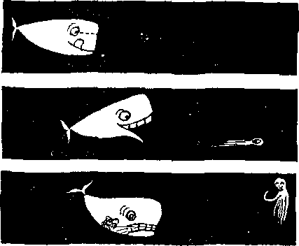

News sources that are able to keep you awake to the vital issues of our times must be unfettered by censorship and selfish Interests. “Awake I” has no fetters. It recognizes facts, faces facts, Is free to publish facts. It is not bound by political ambitions or obligations; it is unhampered by advertisers whose toes must not be trodden on; it Is unprejudiced by traditional creeds. This journal keeps itself free that it may speak freely to you. But it does not abuse its, freedom. It maintains integrity to truth.
“Awake I" uses the regular news channels, but 1b not dependent on them. Its own correspondents are on all continents, in scores of nations. From the four comers of the earth their uncensored, on-the-scenes reports come to you through these columns. This journal's viewpoint is not narrow, but is international. It is read in many nations, in many languages, by persons of all ages. Through its pages many fields of knowledge pass in review—government, commerce, religion, history, geography, science, social conditions, natural wonders—why, its coverage is as broad as the earth and as high as the heavens.
“Awake 1” pledges itself to righteous principles, to exposing hidden foes and subtle dangers, to championing freedom for all, to comforting mourners arid strengthening those disheartened by the failures of a delinquent world, reflecting sure hope for the establishment of a righteous New World.
Get acquainted with “Awake i" Keep awake by reading “AwakeI”
Published Semimonthly By WATCHTOWER BIBLE AND TRACT SOCIETY OF NEW YORK, INC, 117 Adams Street, Brooklyn 1, New York, U. S. A, N. H. Knorr. President Grant Suiter, Secretary
Printing this issue: 2,450,000
athur hnrniK In whkti “Await I” It piblhUd: StnlitHrtlily--Africans, Finnish, French, German, Greek, Hollandlsti, Italian, Norw^Un, ttianbh. Swedish.
Monthly—Danhib, Indonesian, Japanese, Portmuese, Ukrainian,
' Yearly subscription ratrt Ml cm for i*erri I monthly editions
Amelia, U.S., Sr, J, N.Y. »1
AutratiHr 11 fferesforrf SJh fitraCA/tefrt,
Canada. 150 Bridgeland Ave., Toronto in, Ont. $1 Eiland, 34 Craven Terrace, London. W. 2 77-New Zulind. 6.P.O. Box do, Wellington, C. 1 7/-SiOath Afrlei, Private Bag. WiidBfnntelij, Til. 7/-
Monthly edition cat hilt th* abort rnlu.
Five cent* a copy
fcMlttanem should bo eent to nflkstj In four country in compiianee with regulations to gunrFmt.ee safe deitwy of money. Eelflittane«i are accepted at Brooklyn from tout) tripg vrhere no office U located, tiy luLemat.innil mofley unjer only. Subscription rates In different coimlries are here, staled in local currency. kotlM of expiration (with renewal blank! is sent at least two issues before aubscrljXion ex-nlrrs. Change of a«rm» when »nt to cur office may be cipected effective within one mratiL Send your old iff well aa new addrew*
Entered ms second‘Class matter at Brooklyn, ftf. Y.
Printed in U.S.A.
Protestants Protest Against Protestants 3
What Are the Prospects for Lasting Peace? 5
Quebec Doctors See Transfusion Danger 8 Negro Progress and
Frozen for Centuries but Alive Today? 12
Will the Whistling Swan Survive?
Brilliance Without Moral Power
The Heart Makes Its Own Electricity 24 "Your Word Is Truth”
Jehovah's Witnesses Preach in Al)
J PROTESTANTS PROTEST AGAINST j
By "Awakd” correspondent in Swill*rland
THE disciple James wrote: “Become doers of the word, and not hearers only, deceiving yourselves with false reasoning.” (James 1:22, New World Trans.) Etoes Protestantism heed the counsel of James? Not according to Hermann Kutter, a prominent Protestant clergyman whose books have made him famous beyond the borders of Switzerland. In his book Where Is God? he says: “We want to be saved with [God], but we do not want to be men of God. This is the deadly weakness of Protestantism. It cannot be just a church institution like Catholicism .. . but neither does it want to be prophetic and apostolic like the first witnesses, and so it dies because of its inconsequence.”
Further protesting against Protestantism this Protestant clergyman goes on to say: “God’s Word is the word of the Master, not the word of an actor, which you may enjoy merely from an aesthetical point of view, but ... to us the words of God are not instructions to work. We do not stand in a working relationship to God, but merely in a relationship of religious edification and meditation. To us God’s Word is merely an aesthetical enjoyment, but not the Word which has to be carried out if we do not want to become corrupt. And we are corrupt, as is evident today before all eyes, because we have ignored the Master’s instructions and given way to a religious, selfish Christianity evolving around our own salvation.”
Christians are commanded at Hebrews 10:23-25 not to neglect coming together. Protesting Protestantism’s lack in this matter is the Neue Zurcher Zeitung, March 14, 1956: “According to sober estimates and inquiries, at present only about ten percent of all Protestant inhabitants of Zurich regularly attend church; about thirty to forty percent attend occasionally (once in two years!). About half of all Protestants have lost all contact with the church and they probably have not opened their Bibles since they left school.” The authors of a Zurich campaign to counteract church indifference lamented: “Our nation, viewed as a whole, has ceased to be a Christian people.”
Protesting against the way the Protestant clergy of Germany failed their people during the Nazi regime, Martin Niemoller once said: “I have never made the whole German people without exception respon-
sible and guilty for the Nazi crimes, but time and again I have said that we have no right to pin all the blame on the wicked Nazis, and to act as if we were innocent. I have always stated: Surely we are not all murderers, thieves and sadists, but we have done little or nothing to stop the ruin and especially have we, that is, the church, failed, because we knew the wrong and the right way, yet we let the people run into ruin without warning them.’1—National Zeitung, Basel, December 20, 1945.
A more recent protest against the Protestant Church by a Protestant clergyman was published in the Oberlander Sonn-tagsblattj January 9, 1955; “God has entrusted the church with the gospel for the whole world. But what has the church not done with God’s gospel? Suppression after suppression, fraud after fraud has been committed. Oftentimes stones instead of bread have been held out. . . . What miserable and pitiable bunglers and folders we pastors often are when compared with the apostle Paul, who really was imbued by Christ and was a child of God! We can well understand those who have assumed a critical attitude toward the church, because its servants proved to be servants of men, of mammon and of the Devil, of political parties and groups rather than servants of the gospel.”
And finally, note the protest of university theologian Georg Noth, which appeared in a special issue of the Amtsblatt (Official Journal) of the church at Nassau-Hessen, Germany, August 1, 1948: “We theologians and clergymen show, by our attitude in this decline of the modern world, that we are hit by the gospel and belong in the ranks of the Pharisees and Sadducees, who have not understood the signs of the times. (Matt. 16:1-4) As ministers, called to preach the truth and obligated to express it in the pulpits, we belong to the hypocrites pretending, like actors, to be something which we are not We pretend to make known the truth and do not have it. As ministers of the gospel we are seemingly attached to the truth, but actually we belong to the evil and adulterous kind, demanding signs from the gospel even today in the midst of a world that is about to go under.”
But note the testimony of such clergymen regarding the witnesses: “There are some things you have to admit about Jehovah’s witnesses: First, their exemplary steadfast attitude toward National Socialism before and during World War II and with which they now reject the unchristian ideology of communism. Second, how they are able to bear sacrifices for their cause and how impressively they put into practice the command that ail Christians should be ministers.”—Zurcher Kirchen-bote (Church Messenger), December, 1955.
And says Kurt Hiitten in his book Seher, Grubler und Enthusiasten (Seers, Ponderers and Enthusiasts): “But even in the remotest countries Jehovah’s witnesses are at work—in Burma, Ethiopia and Bolivia as well as in the Moslem countries of Saudi Arabia, Pakistan and Egypt. There is no sect whose propaganda is so world-wide and so loaded with energy as theirs.”
That is as it should be, for did not Jesus command: “Go therefore and make disciples of people of all the nations”?—Matthew 28:19, New World Trans.
profanity
+ “Profanity,” it has been said, "Is the effort of a feeble mind to express itself forcibly.”
A WAKE.'
AN can-in-T1/ deed, now must—achieve an age-old dream." What dream? The dream of lasting peace. So says onetime head of the Rockefeller Foundation Raymond B. Fosdick, in an article entitled “To Attain the Vision of Peace/* which appeared in the
ier such ignominious defeats in Hungary and the Suez Canal?
Not quite so confident was Christian Pineau, then premier of France: “If the West, which is in the process of reinforcing its unity, behaves with realism and composure, and if the Soviet Union is giv
New York Times Magazine, issue of December 23, 1956. Fosdick also observed: “We realize that in a future as far ahead as we can see Why has man fatfed achieve lasting peace? Will it ever he realized? if so, how, when and fay whom?
en no reason to doubt our resolution, war will be avoided.” Pineau combined two vital “ifs” with some very wishful thinking, according
there will be no surcease of anxiety.... we live in a world of bewilderment and moral wandering without parallel in modern times, and the race with chaos is desperately close/’ While he tries to express confidence, Fosdick warns: “The nature of our extremity is such that we must move swiftly and imaginatively, with daring and high resolve.”
Very pertinent to our theme is “A World Survey—Chances for Peace,” which appeared in U.S. News <£ World Report, December 28,1956. Twenty-seven pages were devoted to an analysis of the world situation and to statements by political leaders and leading newspaper editors.
United States Secretary of State Dulles was very optimistic: “If the United States and our allies of the great free-world partnership maintain our moral offensive and our military defensive, the promise of peace, freedom and justice, inherent in the coming years, will, I am convinced, become reality/’ But if that is so, Mr. Dulles, why did the “free-world partnership” suf-to other world leaders.
Thus Prime Minister Menzies of Australia was much less optimistic* Queries he: “Can anybody really believe that the United Nations can of itself keep the peace? ... If one of [its members] decides that the moment is advantageous to make war, it will make war on the basis of its own judgment and its own interests. Whether it will be successfully resisted in war will depend upon the judgment and strength and cohesion of the other great powers who desire peace.”
And the late president of the Philippines, Ramon Magsaysay, evinced no optimism at all regarding the prospects of lasting peace: “There is no peace in the world today, and there cannot be as long as Communism persists in stirring up trouble to further its program of undermining and destroying freedom in the nonCommunist world?’
Still more pessimistic is the bitter logic of Syngman Rhee, president of Korea: “The situation is more dangerous than ever before,,.. The Communists* pressure
for expansion is not less but greater. Hence, the danger of a collision between the aggressor and the defensive forces of the democratic nations has increased. . . . To prevent fighting among nations is like preventing fighting in a large family in which a big bully brother greedily snatches everything away from his sisters and brothers. There will be no end to fighting until someone undertakes to punish the bully aftd makes him return what he has taken.”
When Henry Cabot Lodge, U.S. representative to the United Nations, was asked if he was optimistic about the prospect of peace during 1957, he answered: “Any public official who is working for peace must be optimistic about it, because, if he is pessimistic, he diminishes the chances of peace. ... I would say, on the whole, that it may be a little less dangerous this year than last year. ... On the other hand, no one can tell what are the inner workings of the minds of the men who sit at the controls in the Kremlin.”
According to various Frenc h editors there is a greater risk for general war. “Recent events carry a risk for the future. Wars are often born from miscalculations.” “Nasser is a constant menace to peace.” At best, they opine that “war is not inevitable."
And say Italian editors: “If by peace you mean a true peace, the answer is there is no chance at all.” “If you mean the absence of war, the chances are about 70 per cent. If, instead, you mean a solution to the world’s tensions or a real step toward a solution, then, as things stand now, the chances for such a peace drop down almost to zero.”
Summing up its twenty-seven-page report U.8. News £ World Report says: “An uneasy peace is the outlook for most of the world in the year ahead.”
In view of the foregoing, what wishful thinking to conclude, as did one of America’s leading Baptist clergymen, H, C. Phillips, that “war has become so incredibly awful, it is now the stanchest ally of peace”! The prospect of war’s getting more incredibly awful all the time is no guarantee that one side will not some day miscalculate the temper of the other or conclude that even such war is the lesser of two evils.—New York Times, April 29, 1957.
Man’s Vain Efforts to Gain Lasting Peace
Men have tried time and again to bring about a lasting peace. One of the first of these in modern times was The Hague Court, formed in 1899, which was to bring about peaceable settlement of disputes between nations. Still it did not prevent World War I from being fought.
The next futile effort of men was the League of Nations, which came into being in 1920. Eventually comprising some sixty nations, its members agreed not to go to war with one another. But the League could not prevent its members from leaving it, and it was no more successful in preventing World War n then its predecessor, The Hague Court, was in preventing World War I.
Apparently not too sure of themselves as to the effectiveness of their League of Nations, seven European nations met and signed the Locarno Peace Pact in 1925 to preserve European peace. Three years later the Kellogg-Briand pact, renouncing war as an instrument for settling disputes between nations, was signed by fifteen of the world’s leading nations. These pacts proved futile, as did also many, many others that were meant to serve a similar purpose—peace among nations.
Especially during World War II was there agitation for a lasting peace, and the result eventually was the United Na-tlons organization, born in 1945. According to its charter its purpose was “to save succeeding generations from the scourge of war.”
But in spite of all its activity there is no prospect for lasting peace, as we have seen. It has not lessened the bitterness of the “cold war” between the East and the West; it has not succeeded in uniting Germany. Neither has it settled the dispute between India and Pakistan over Kashmir, between India and Portugal over Goa, between Israel and the Arab states, nor did it prove itself able to restrain Russia in Hungary.
In view of the failures of the United Nations organization, some well-meaning souls argue for a World State. But the futility of any such scheme must be apparent when we consider that it requires even more of world rulers than does the United Nations organization. If they will not yield an inch, how can they be expected to yield a yard?
Others insist that prayers could bring about peace. “Our Prayers Could Change the World,” says Stanley High in Reader's Digest, February, 1955. But judging from the results of prayers by the world, especially in time of war when nearly everybody does much praying, God does not hear such prayers. How can we expect him to when Jesus said: “My kingdom is not of this world,” and “I pray not for the world”?--John 18:36; 17:9. .
Then, again, there are many who are impatient with those who would resort only to talk. Among these is Benjamin A. Javits, an economist, who, in his book Peace by Investment, recommends colossal outlays of money on the part of the United States to ensure peace. But those who have the purse strings of that nation refuse to consider his plan, deeming it impractical. Others recommend “preventive war,” that is, striking first with all the war power at the command or the democracies. Rulers shrink back from this solution, because of both the hazards and the moral implications.
So both East and West continue to prepare for what they believe to be the inevitable conflict by stockpiling atomic weapons, making tests with them and seeking to break “through the last experimental-stage barriers to the intercontinental ballistic missile.” Then “the northern forests of both the United States and the Soviet Union will be liberally seeded with rockets armed with nuclear warheads pointed in each other’s direction—preaimed, pre-set, and ready for launching at the touch of a button.”—Christian Science Monitor, December 15,1956.
Sure Prospects for Lasting Peace
Why is man unable to solve the problem of peace? Why, in spite of the fact that nearly all men want peace, is there no prospect for peace? For two basic reasons. One of these lies within man; he is weak, imperfect and selfish. On the one hand are his feeble, misdirected efforts for peace and on the other are his greed for gain and the lust for power. It simply “is not in man that walketh to direct his steps.” Men of the world have rejected the Word of God and so they are without wisdom.—Jeremiah 10:23; 8:9.
The second basic reason lies outside of man. How so? In that, as the Bible clearly shows, there are unseen powerful superhuman creatures that dominate earth’s affairs and especially influence and control the rulers who have no faith in God. Thus we read that Satan, ‘the god of this system of things, has blinded the minds of the,unbelievers.’ Also, that "the whole world is lying in the power of the wicked one.” Yes, Satan the Devil is “the ruler of the authority of the air, the spirit that now operates in the sons of disobedience.” Satan and his
demons are not interested in peace.—2 Corinthians 4:4; 1 John 5:19; Ephesians 2;2, New World Trans.
But let lovers of peace rejoice, for Jehovah God is the God of peace and he will have a peaceful earth. He being almighty, nothing can resist his power. He will bring about a righteous and peaceful condition upon earth so “that men may know that thou, whose name alone is JEHOVAH, art the most high over all the earth/'—Psalm 83:18.
The means by which God will do this is the Kingdom for which Christians have been praying for 1,900 years. Its king will be Jesus Christ, concerning whom it was long ago written: “For unto us a child is born, unto us a son is given: and the government shall be upon his shoulder: and his name shall be called Wonderful, Counsellor, The mighty God, The everlasting Father, The Prince of Peace. Of the increase of his government and peace there shall be no end."—Isaiah 9:6, 7.
That kingdom will bring about peace by first of all destroying all human enemies of God and peace: "In the days of these kings shall the God of heaven set up a kingdom, which shall never be destroyed: and the kingdom shall not be left to other people, but it shall break in pieces and consume all these kingdoms, and it shall stand for ever.”—Daniel 2:44,
Step by step mankind will be restored to mental, moral and physical perfection. —Isaiah 26:9; Revelation 21:4,
That ours is the day for these prospects for peace the fulfillment of Bible prophecy plainly shows. Particularly is this fact established by Jesus’ great prophecy found at Matthew 24, Mark 13 and Luke 21.
So let all lovers of peace rejoice, for the prospects of lasting peace are assured by God’s kingdom, and that in our day! Seek Jehovah, meekness and righteousness, that you may be hid in the day of God’s anger, Armageddon, to survive into the new world in which righteousness will dwell,—Zephaniah 2:3; 2 Peter 3:13,
QUEBEC’S DOCTORS SEE TRANSFUSION DANGERS
<L Reporting on the annual meeting of the Quebec division of the Canadian Modi cal Association, the Montreal Gazette of May 3, 1957, said: "Quebec doctors were told here today that too much blood, most of which is donated freely by Canadians through the Red Cross, is being wasted in unnecessary transfusions. As many as one out. of three transfusions now given routinely in hospitals was described as unnecessary. , . . They were told that the routine use of one bottle of blood during relatively minor surgical operations was one large source of wastage. It was emphasized also that overuse of blood in transfusions increases the danger of serious illness or death from spoiled or diseased blood. 'If a patient needs one bottle of blood, he doesn't need it,* said Dr. Paul Weil, head of the independent blood transfusion service of the Royal Victoria Hospital in Montreal. ‘He either needs none or more than one. . . , The amount of blood in one bottle is too small to influence the outcome in any condition in which it is administered in the average-sized adult. <1. "Dr. G. W, Miller, Toronto, national director, Canadian Red Cross Blood Transfusion Service, said: Tn one out of three cases of transfusion our statistics show that only one bottle of blood is used.’ He agreed with Dr. Weil and other speakers that in the great majority of cases, one bottle of blood is either useless or unnecessary. . . . Other speakers stressed the danger to health and life from unnecessary transfusions. In any transfusion there is a calculated risk that harm may result from contaminated or diseased blood. If there are many unnecessary transfusions the risk of such accidents is obviously increased.”

under white domina
tion the Negro was the last to be hired, the first to be fired. Of his legal rights and opportunities the Negro has been deprived. Therefore, his progress in labor, in the community and in the world has been slow.
However, the Negro is becoming better educated, better equipped and trained for skilled work. Job opportunities are opening up to him. He is being gradually integrated into the labor force. Group antagonism and exclusiveness are slowly being eliminated. Demands of segregationists are being rejected. Labor adjustment with mixed races has been most favorable, creating better interracial feeling. Managerial, technical and scientific posts that were closed to the Negro prior to World War II are now being opened to him. The Negro is being accepted in all branches of city, state and federal government.
This, however, does not mean that discrimination in labor has been solved. Negro progress is far too new and limited to justify any such conclusion. But glancing back over the years, the Negro can take courage. He has come a long way. Commissioner Elmer A. Carter, who in the last eleven years has helped New York state administer its antidiscrimination law, calls the change in the Negro's occupational status “little less than spectacular” in that time.
In the United States the Negro could not share equal advantages with the white man until after the Civil War. Even then his legal rights were often ignored. Many employers would refuse to hire the Negro for technical jobs because they believed him incapable of acquiring skill. It was generally assumed that the Negro would always serve in a subordinate role as a third-class citizen. Even many Negroes came to accept this view.
Deeply ingrained discriminatory practices were bound to have an effect on the Negro race, and they did. Dr. Eli Ginzberg in his book The Negro Potential says: “The discrimination so long practiced against the Negro has been so pervasive that relatively few Negroes are now able to take full advantage of their new opportunities.”
Union Opposition
It was not until after World War I that the Negro position began to improve in the United States. There were fewer immigrants coming to America. There was a demand for man power because of the war and expanding war industries. The Negro began to leave Southern farms to find work in Northern factories.
The first half of the 1930’s was hard for both the Negro and the white worker. When working conditions began to improve, the higher-paying jobs were mainly skilled and the qualifications were so high that the Negro was left to eat the crumbs that fell from the white man’s table.
With the coming of World War II industries developed an almost insatiable appe-Tile lor man power, me unai iiLuuuer employed rose from about 47,000,000 In 1940 to about 64,000,000 in 1955. Despite this man power demand, Gunnar Myrdal observed, Negroes profited less from the war boom than they did in World War L He states that “in October, 1940, only 5.4 percent of all Employment Service placements in 20 selected defense industries (airplanes, automobiles, ships, machinery, iron, steel, chemicals, and so on) were nonwhite, and this proportion had, by April, 1941, declined to 2.5 percent"
During the war period many labor unions raised high the wall of exclusion. One authority says: “Eighteen international unions maintained constitutional or ritualistic restrictions against Negroes. Independent unions and those affiliated with the A. F. of L were the greatest offenders. The general organizer of Aeronautical Mechanics Local No. 751 of Seattle, International Association of Machinists, declared to the press: ‘Organized labor has been called upon to make many sacrifices for defense and has made them gladly, but this [admission of Negroes] is asking too much,’ ”
Although Negroes constituted thirty-five percent of the workers of the Newport News Shipbuilding Company, they were refused training by the company for positions as electricians and machinists. The Chicago Defender, a leading Negro newspaper, dated January 25, 1941, said: “All efforts toward elimination of racial bias in the industries that are receiving defense contracts have so far met with a stone wall.”
The Philadelphia Transportation Company had never, prior to 1943, employed Negroes as conductors or operators. When it was in dire need of workers in January, 1943, it asked the United States Employment Service for one hundred white motormen, despite the fact that it had five hundred Negroes employed in less skilled jobs. When the company announced that it was going to upgrade and employ Negroes, the Philadelphia Rapid Transit Employees Union protested and urged a strike. Handbills were passed around, saying: “Your buddies are in the Army fighting and dying to protect the life of you and your family, and you are too yellow to protect their jobs until they return. Call a strike and refuse to teach the Negroes, the public is with you, the C.I.O. sold you out.”
Exclusion Policies
Despite open rebellion against him the Negro has forged ahead. With the help of a few clear-thinking, hard-fighting men, both white and Negro, he has managed to gain acceptance in industrial unions. This has opened a whole new world of opportunity to him. In December, 1955, the merged A. F. of L. and the C. I. O. had written into their constitution an uncompromising declaration against discrimination. Despite this fact some unions are still dead set against hiring Negroes.
A. H. Raskin, writing for the New York Times, April 26, 1956, stated: "Craft unions in the construction and printing trades maintain the most rigid exclusion policies. In most parts of the North they have no Negro members and admit no Negroes to the apprenticeship programs that represent almost the only way a worker can qualify for skilled employment in these fields. The independent railroad unions are just as tightly closed,” There are “few signs that the closed unions in labor’s own house will hurry out the welcome mat”
Advances in Negro labor relations have affected only a microscopic segment of the Negro labor force. No more than token advances have been made. Raskin makes this point clear: “Even in factories,” he declared, “in which 15 to 50 percent of the workers are Negroes, it has been rare for them to reach the top skilled categories and even rarer for them to become foremen. They are still to be found in largest numbers in foundries, coke ovens and other heavy, dirty jobs. Even in Detroit, generally considered ‘the best city’ in the United States for a Negro worker, promotion opportunities above the semi-skilled level are few." The Negro worker finds himself up against invisible promotion walls. From driller to ditch digger the story is the same. For the Negro to be as good as the next man is not enough to justify a promotion. He finds he must be at least head and shoulders over his rivals; even then a justified promotion is extremely doubtful.
The automobile capital of the world, according to Raskin, “has 100,000 Negroes in factories operating under contracts with the United Automobile Workers. This union believes so strongly in fair employment practices that it allots 1 cent a month out of the dues paid by each of the 1,500,000 members to a committee to combat bias. Yet Brendan Sextan, the union’s' research director, has said he remembered only one Negro having been promoted to foreman in charge of a mixed crew in any Detroit plant. And this Negro voluntarily applied for demotion to his old job as an inspector because he believed he had been ‘caught in the middle’ in his efforts to be a supervisor. In Pittsburgh, Cleveland and other mass production centers, as in Detroit, the handful of Negroes who become foremen or group leaders are usually in charge of all-Negro crews. In the upper supervisory and executive ranks Negroes are found scarcely at all."
Greatest Advances
Where Negroes have scored their greatest advances has been in civil service and political jobs. In these fields they have completely shattered the myth that Negroes are incapable of assuming responsibility, They have also made great strides in engineering and the physical sciences. Here they have blasted the theory that Negroes were not capable of professional skills and techniques. Negroes scored here primarily because the luxury of discrimination could no longer be indulged in by employers. The demand for scientists is too great today. Skin color simply had to be overlooked.
Negroes have been elected to the United States Congress, to state legislatures, to judgeships and other high public posts. Assistant Secretary of Labor J. Ernest Wilkins is the first Negro in the United States to sit at a meeting of the president’s cabinet. Wilkins’ son, Dr. J, Ernest Wilkins, Jr., is senior staff executive of the Nuclear Development Corporation of America in White Plains. An undersecretary of the United Nations is Dr. Ralph Bunche, a Negro,
New York city has a high proportion of America’s outstandingly successful Negroes. Manhattan’s borough president, Hulan E. Jack, is a Negro. Among other Negroes in important posts in the city and state government are “Arthur C. Ford, commissioner of Water Supply, Gas and Electricity; Robert J. Mangum, deputy commissioner of police; Mrs. Anna A. Hedgeman, special assistant to the mayor, and Robert C, Weaver, state Rent Control Commissioner." “Dr. Thomas Matthews recently was made chief neuro-surgeon at the Coney Island Hospital. Dr. John Hope Franklin was appointed a short time ago as head of the History Department of Brooklyn College. Thousands of other Negroes in the city hold important positions in the professions, in entertainment and in industry.”—New York Times, April 23,1956,
Throughout the United States today Negroes are serving as superintendents of post offices, directing key departments in municipal hospitals, working as policemen,
firemen, as school principals and teachers, and ate discharging their responsibilities on the same basis as do white workers. Negroes are singing in the Metropolitan Opera Company and are outstanding in all branches of popular music and sports. These thousands are serving for other Negroes as morale-building symbols of opportunity and racial capability. These advances, even though great, significant and appreciated as they are, must be viewed merely as a token of what must follow if peaceful interracial labor relations are to be achieved.
What are the prospects for the Negro laborer? For every dark spot there are at least a dozen bright ones. Fifteen states and forty-one cities have made hiring, training and promotion practices free of bias a legal requirement. The United States is insisting on equal job opportunities for employers holding federal contracts. Industries know that integration can work because they have seen it work, and report that plant morale has improved as a result of mixture of races working together. Integration is smooth and co-operation takes the place of rancor. Job seniority and security, plus a special effort on the part of unions to clear out all unfair practices against the Negro from unions, form bright spots in the labor relations picture. However, group antagonism and exclusiveness will not be completely eliminated until the Negro is hired on terms of complete equality in all conditions of employment. Before this happens the road ahead for the Negro is long, rocky and rough. And until this happens, labor, the community and the world are the losers.
FROZEN FOR CENTURIES, BUT ALIVE TODAY?
<L The Havana newspaper Prensa Libre published a most singular news item in its Issue of March 26, 1957: "London, March 23, (United). Radio Moscow said today that a group of geologists unearthed in Siberia an aquatic animal that was still alive after thousands of years in frozen soil. The radio station said that the discovery was made In the Indigirka river valley, in the Soviet Socialist Republic of Yakutsk located in eastern Siberia. When the geologists took a sample of the soil (which is frozen continually) from the river bank, they were surprised to see a chunk of the dirt moving. Afterward they discovered in the soil a triton, a marine animal that has a shell covering like a trumpet, and which dates back to the preflood period, The animal came to life as the sun thawed up the soil in which it had slept for thousands of years. The Yakutsk Republic is one of the least explored regions In the world and some of its places are the coldest in the earth.”
Creatures of the sea produce enormous quantities of eggs to ensure that their reapective species do not become extinct. "In the open sea a female cod may lay six million eggs each season,” report Lotus J. and Margery J, Milne in The Mating Instinct, "A salmon high in a western stream can do better than five times this number. The lowly oyster, cemented by one shell to the bottom, lifts the other and casts out into the ocean as many as half a billion eggs per year. Along the
California coast those shell-less snails, the sea hares, do about as well. A five-pound, two-ounce sea hare—only one third full size—laid eggs in strings at a measured rate of 41,000 eggs per minute. Over a period of four months and one week, the MacGinites tallied 478,000,000 eggs from this single individual—which is a continued output averaging 2,640 per minute, hour after hour, for those eighteen weeks. And this was representative, not a record maximum!"
VISITING THE “LAND OF FIRE”
BY AWAKE!" CORRESPONDENT IN CHILE
1520 a Portuguese navigator, erdinand Magellan, sailed to the southernmost tip of the South American continent. His ships faced
what a later explorer described as “the worst climate of the universe.” Entering the strait that now bears his name, Magellan encountered winds that ripped the sails from the masts of his ships. His skill as a mariner was tested to the limit by the many natural barriers. Even from the shore he had trouble. He had to stay far enough away from it to avoid the poisoned arrows of the Indians. Since the Indians kept continuous fires burning at night that dotted coast and plains, Magellan called this mysterious land “Tierra del Fuego,” meaning “Land of Fire.” We are on our way to visit the “Land of Fire” and the southernmost city in all the world.
It is late in the afternoon when the launch is ready to sail. The air is cold as the boat gets under way, and the overcoat we were advised to bring along feels good. Soon it gets dark and we notice some of the passengers watching the water that is pushed aside by the prow; it looks as if it were full of matches that strike as they hit the metal or wood of the structure. Our attention is drawn to the multitude of these lights—underwater fireflies or glowworms that light their mysterious lamps, glow for an enchanting moment and disappear in the darkness of the sea.
It is nearing nine o’clock now and the
launch is being tied to the dock at Chacao on the “Isla de Chiloe,” which means “Island of Sea Gulls.” While on this island we learn that it was probably here where the first potatoes were discovered. They still grow wild in this place. The beautiful green of the rolling hills and valleys reminds us of the pictures we have seen of Ireland. At least here is one place where nobody is in a hurry. Life is peaceful.
Soon we must leave this “Island of Sea Gulls." The boat we are to take is at anchor in the bay. But look! What is going on by the shore? A horse in a rowboat! Now the boat is being pushed out into the water. The horse stands quiet now, feet braced, as a man sits down behind him and begins to row out to the ship. Once alongside, a sling is placed under the horse's belly; then, with the ship's crane, the horse is lifted high into the air and swung up over the deck, where he is let down, a little startled but unscratched.
Now the deep roar of the boat whistle tells us that we are saying good-by to this picturesque island. We are on our way to the Strait of Magellan, south of which are the many islands that make up “Tierra del Fuego.”
The Strait of Magellan and Punta Arenas
It was Antonio Pigaf etta, the Italian historian who accompanied Magellan, who wrote the oldest description of the region of the strait. Wrote the historian in 1520; “In it we found at every half league a good port and place for anchoring, good waters, wood all of cedar and fish like sardines, missiglioni, and a very sweet herb named appio (celery). There is also some of the same kind which is bitter. This herb grows near the springs and from not finding anything else we ate of it for several days. I think that there is not in the world a more beautiful country or a better strait than this one.”
As we neared the entrance of the Strait of Magellan, we too remarked about the beauty of the area. But our attention was called to something not beautiful but mysterious—wreckage that littered the shores, and masts that protruded from the water. “We are sailing through the ‘ship cemetery,’ ” remarked one of the crew members. “That ship nearby was the sister ship to the one we are on. It was called the Moraleda. Tragedy struck her a few years ago as she headed north with more than 200 passengers aboard and ran ashore here at night. Very few of the passengers escaped.” As we glance down at the blacklooking water that seldom has a temperature above 32 degrees Fahrenheit a chill runs up our spine at the thought of the fate of those passengers.
Finally we arrive in Punta Arenas, the southernmost city in the world. Situated on the mainland shores of the strait, Punta Arenas is just opposite Tierra del Fuego. Established in 1849, this port of call is now a fast-growing city of some 40,000 persons. From its very foundation the city was harassed by Indians, wrecked by mutinies, threatened by starvation, razed by fires and faced with abolition by the authorities in Santiago. Not until 1939 did this area cease to be a colonial territory and become a province. The government recently declared Punta Arenas a free port, but at the time of writing the population in general has felt very little relief through its benefits.
Tierra del Fuego
When historian Pigafetta sketched a map of Magellan’s Strait in 1520 he regarded Tierra del Fuego as a polar continent. Actually it is an archipelago, separated from the mainland by the strait, consisting of a large main island and many smaller islands. The large island is about the size of Switzerland.
Tierra del Fuego once was the home of some 30,000 Indians. Today, owing to food shortages, diseases, vices and weapons of the white man, it is doubtful if there are more than forty of them alive. But the land that the Ona and Yagan Indians once inhabited is by no means unoccupied. Even the name, the “Land of Fire,” is still appropriate, for today perpetual flames illuminate the night in the northern part. They are the escape torches that control the pressure in the propane gas wells and the occasional fires that are due to accidents in the drilling of oil wells.
In addition to the many inhabitants this industry has drawn to Tierra del Fuego, there is still another very important one, the raising of livestock, particularly of sheep. The grassy plains on the main island used to teem with guanacos, cousins of the llamas. Now sheep farms occupy the land, supplying the wool for many important foreign markets and supplying practically all of Chile’s needs.
A' few years ago this industry was threatened by a plague of rabbits, millions of rabbits; and the “Land of Fire” was under fire. It seems that a Chilean farmer imported two pairs and set them free. That did it. Rabbit population jumped to somewhere between 5,000,000 and 12,000,000. Disaster was imminent, sinceeight rabbits consume as much pasture as one sheep. A war was declared on the rabbits; every means possible was adopted to exterminate them. It was an all-out war. Ranchers used wire mesh for fences, deadly gases, shotguns and shells and paid twenty-cent bounties. Foxes were taken to the island and turned loose. Cats also were imported. Bacteriological warfare came into use. Adult rabbits were inoculated so as to contaminate their offspring and others. The rabbits are gone now; but the war continues, though in a milder form, against foxes and cats.
The shepherds here must be continually alert to protect the lambs not only against the foxes but also against the birds. Birds? Yes, the sea gulls pick out the eyes of newly-born lambs and leave them to die of hunger. The shepherds must be alert.
Weather like a Refrigerator
Are you wondering about the climate? Well, so are those who live here. Instead of four seasons a year they have four seasons in one day—sunshine, wind, rain and snow. During the summer months dry winds from the southwest and west prevail; occasionally they are of terrific force.
This is a perfect natural refrigerator. One can leave fresh fruit on the pantry shelf for the longest period of time without ill effects. Grapes that would spoil in four or five days in warmer climates remain fresh and sound tot weeks. There is very little difference in the thermometer reading for weeks at a time, day and night, perhaps not more than five degrees. From April to September the temperature ranges from 20 to 35 degrees Fahrenheit. Yet the climate is not as bad as one would expect it to be. The yearly average is 42 degrees. Even in the winter it is not as cold here as in the New England states.
The most enchanting feature of Tierra del Fuego is perhaps its exciting scenery. The bays are like a fairyland. One bay, surrounded by snowy mountains and green trees, is called Puerto Encanto (Bay of Magic). Glaciers flow in an area of about eighty miles long and thirty miles wide. In many places a vast glacier creeps to the edge of the channel waters. Hundreds of streams are born of the ice sheets. Some plunge a thousand feet before reaching channel waters. Day and night a live icecap thunders through the wilderness, twisting, cracking and shedding huge splinters into crystal water.
Here the sea winds in narrow channels, shut in by steep mountain walls that tower into the sky, their summits capped with snow and ice. Rich green forests grow beside huge glaciers, and dense fog alternates with brilliant sunshine. No land could offer more startling scenic effects than this Tierra del Fuego, the “Land of Fire.”
C, At the twenty-seventh annual Texas Baptist Sunday School Convention, Dallas evangelist W. Marshall Craig told delegates, as reported in the Houston Post of April 24, 1956: "The church needs more discipleship and less showmanship. . . . The church needs new life more than new methods. Today’s sleeping churches are one of the world’s greatest tragedies. ... A moving world and a stationary Christianity will mean destruction for both.” With this world fast moving to God's war of Armageddon, professed Christians sleeping along with Christendom’s churches should not delay in taking the Bible advice; “You know the season, that it is already the hour for you to awake from sleep.”—Romans 13:11, New World Trans.
WILL THE WHISTLING SWAN SURVIVE?
By “Awake!" corrwpondwit In Canada
DHE ewan truly presents a beautiful picture. As it glides along the water with its grace* ful neck, almost as long as its body, taking ever different shapes, it seems the personification of grace and stateliness. No wonder it has been the favorite of kings and poets.
The whistling swan is one of the two kinds found on the North American continent. Some four and a half feet in length and weighing from fifteen to eighteen pounds, it breeds as far north as the Arctic Sea and winters as far south as the Gulf of Mexico. By means of its web feet, which are as large as a man's hand, it can elude a rower, and by reason of its wing-spread, upwards of six feet, it can travel as fast as a hundred miles an hour. Walking on land, however, it is neither fleet nor graceful.
The whistling swan has had its fight for survival, Indians have been handsomely paid for swan’s-down and especially in times past has there also been traffic in swanskins. Hunters too have takpn their toll. Especially have swans come to grief in years gone by when they have had to land because of sleet weighting down their wings. Then men and boys with guns and clubs wantonly slaughtered these majestic birds. A particular notorious instance of this took place in northwestern Pennsylvania in 1879.
q|» Another threat to this swan's survival is the coyote, moving ever farther north as the climate becomes more mild. However, what for long was the swan's most Serious threat was Niagara Falls. The swans had a habit of coming to rest on the Niagara River above the falls. Almost imperceptibly these large beautiful creatures floated placidly to the brink of the falls. Alarmed and confused as the waters take their last brief rush over the precipice, the swans clumsily try to take wing. But all too often they attempt to do this too late and are swept over the falls. In times past many swans that escaped death were then killed by men lining the stream below.
In 1924 a well-known Niagara ri verm an rescued nine injured swans from the waters below the falls. These were then sent to the Jack Miner Bird Sanctuary at Kingsville, Ontario, two hundred miles to the west on Lake Erie. Four of these swans survive to this day, more than thlry years later.
Meantime, something new in bird and human relationships was shaping up. Bird sanctuaries began to be formed and efforts were made, which proved successful, to entice the Canada geese to use the Kingsville flight path to avail themselves of food and safety. The swans followed suit and so in 1926-1927 more than 3,000 swans were gathered with the geese in this area. Each year since 1927 the swans have appeared with the geese at the Kingsville rendezvous, indicating that they had permanently abandoned the Niagara route. Among the inducements offered the swans were large patches of wild rice.
V Now, however, the wild rice has given out and there ia some question as to whether the swans will And some new route, revert to the Niagara route or stay with the geese using the Kingsville facilities. Their present route to their summer breeding grounds in the far north takes them west from Kingsville to the Detroit River, thence north to Lake St. Clair and then on up the Great Lakes, always keeping to the great water routes. The risky Niagara waters are entirely by-passed. Thirty generations of swans have become familiar with the new and safe route.
It is indeed a pleasure to note that there are some who appreciate the privilege of exercising loving dominion over the brute creation. What a contrast such preservers of wildlife present to those who see Ln a flock of confused and injured swans an opportunity to vent their lust to kill! In God's new world, so near at hand, nothing will hurt or destroy.
WHEN A PORCUPINE IS BORN
How does the young porcupine come into the world? Some say head first; otherwise the backward-directed quills would cause the mother's death. Actually, it matters little, since the baby porcupine comes into the world enclosed in a membranous sac.
16
A WARS!
FAME takes odd and fickle turns. One man attained world fame because some three hundred and seventy-odd years ago he allegedly “did throw his mantle on the ground to help the queen to walk dry-shod over a puddle.” Historians debunk this flourish of gallantry as " a legend. In the same breath they crown this same handsome Britisher with a title of surpassing greatness for which he is scarcely known at all. Sir Walter Raleigh is honored in dry history books as the “Father of English America,”
Now the birth of “English America” is a stupendous event in the history of nations, It was not just the beginning of the United States of America—a nation that in the twentieth century attained five percent of the world’s population and 50 percent of its wealth. More important, this was in actuality the birth of a new world power, the coming forth of an Anglo-American combine of nations destined to unseat the old Roman Catholic alignment of powers with a Protestant reformation that would control two thirds of the world’s populations and three fourths of its wealth.
Sir Walter Raleigh was no visionary genius who foresaw any such new world power. He had come into possession of a six-year patent from his half brother, and
the patent gave its holder and his heirs “proprietary right over all territory they occupied subject to payment of one-fifth of the produce of all mines of precious metals to the crown.” Sir Walter wanted to capitalize on his patent. To do that he had to send an expedition to the far-off continent called America, to take possession of “any remote barbarous and heathen lands not possessed by any Christian prince and people.”
The suave courtier with the “caressing manners” sank £40,000 in colonizing expeditions, for the cold, unromantic reason that he wanted to make a fortune.
In 1584 he dispatched two ships that landed at what is known as Roanoke Island, North Carolina. Raleigh’s explorers (personally he made no voyages) found a soil “the most plentiful, sweete, fruitful, and wholesome of all the world,” inhabited by the “most gentle, very handsome and goodly people voide of all guile and treason, and such as live after the manner of the golden age.”
Next, he prepared to plant a colony in the “new world paradise.” But after one winter away from home his colonists starved and got on bad terms with the “most gentle, very handsome and goodly” red-skinned natives. They thumbed a ride back to England when Sir Francis Drake sailed by to see how the colony was faring.
The following year, 1587, Sir Walter launched a new colony. While they were building a fort, repairing what houses had been Jeff and adding new ones, their ship commander sailed back to England for winter supplies. He arrived home just as the Spanish Armada was attacking, and every ship—his included—was commandeered to fight the Spanish. It was three years before anyone got around to visiting Roanoke island again. All they found was grass and weeds, a few pieces of broken armor and the word croatan carved on a tree. To this day no one has been able to figure out what happened to Raleigh’s Lost Colony or to decipher the word croatan.
But it could be said, in a way, that English America had been born. Sir Walter might not have planted the English nation in America, but he had planted the idea of such a venture so firmly that others succeeded in carrying it out.
Highlanders, Red and White
Sir Walter Raleigh’s unsuccessful attempt to “plant the English nation in America” was in hot competition with the Spanish, who, had it not been for Englishmen like Sir Walter, might have planted the Spanish nation in Carolina instead.
Years before Raleigh’s virgin expedition, in about 1540, a plundering Spanish gold hunter, Hernando de Soto, penetrated Carolina all the way across the Appalachian Smokies. Hernando was searching for a legendary Golden City. All he found among the misty mountains was a tribe of Indians known today as the Cherokee, who planted maize and lived like farmers.
De Soto got across the Smokies into parts of what is now Tennessee. He pushed through one of the most beautiful, wild and entrancing regions ever seen, to the grave of a rainbow-chaser in the bosom of the Mississippi. The charming wilderness he crossed was the red man’s hunting ground.
For two hundred years the Cherokee (Up-landers or Highland Indians) fought their hearts out to preserve their hunting ground from the whites. A remnant band of Cherokee still lives in the Great Smoky Mountains National Park.
A poignant thing about these highland red men is that they were displaced mostly by another highland people, the Scots. Back home in Scotland the white highlanders were sorely oppressed by other Britishers, including, by the way, Sir Walter Raleigh.
While Sir Walter was making himself increasingly unpopular, and while the King James Version Bible was in production, a stream of Scotsmen was on the move, eventually to wind up on the Atlantic seaboard of the new continent. From there a continuous current of new world seekers filtered down the Shenandoah Valley into western North Carolina. There they merged with another stream of Scotsmen who sifted through from Wilmington, Charleston and Port Royal.
The white highlanders had left an old world of bitter memories. But alas! freedom from savagery and blood and hate eluded them in their new world when, in time, the white colonists rose up to cast off their English king and declare their political independence. Not that their rebellion was unanimous. Many a colonist remained loyal to the king back across the sea. Communities split and families split, and during the American Revolution it became again the old story of ‘family hates and blood feuds and savagery in which the people died.’
These people not only vanquished the native red men and settled in their hunting ground in Tennessee and Kentucky but also took part in the Battle of Kings Mountain, which historians agree turned the tide of the Revolution in favor of the Colonies. The English nation, planted in
America, had now become the American nation.
Not that the stronger ties of blood and flesh were ever really broken with the mother country. It would take more than kicking over the political traces to do that. After all, not a century had passed before the new American nation became embroiled in a horrible Civil War, and the area where the Scotsmen had planted their enduring culture marked the dividing line between the Northern and Southern states. Nowhere more than here did family split apart and brother murder brother, echoing the old refrain of ‘family hates and blood feuds and savagery in which the people died.’
Yet through fields of hate and misery and hope and yearning and love the new nation emerged intact, and this fascinating region of some eight million inhabitants, with its twenty-six TVA “Great Lakes of the South,” and its Great Smoky Mountains National Park, has become a leading vacationland of North America.
These Events Dramatized
The history of this birth of a new world power is depicted in fascinating open-air dramas in various parts of this area. On Roanoke Island at Cape Hatteras seashore of North Carolina in the evenings between July and September you can witness the play “The Lost Colony” that romanticizes the birth of a new world power in an intriguing manner.
The story of the survival of the upland Indians is told in a superb outdoor drama at Cherokee, North Carolina, “Unto These Hills.” The revolutionary period of young America is presented stirringly in two other outdoor dramas: “Horn in the West” at Boone, North Carolina, and “Chucky Jack” at Gatlinburg, Tennessee. And the history of this area continues to be carried forward by other such dramas in the Southland, like the one called “The Wilderness Road” at Berea, Kentucky.
A Still Newer World Power
When you visit this region you are likely to encounter some of the approximately eight thousand men, women and children who are involved in a still different kind of drama here. Probably they esteem the real significance of the rise of the Anglo-American civilization more than anyone else you will meet. They identify it as the seventh world power (succeeding the Roman) described in the Bible, which seventh advocates and leads in merging ail nations into an eighth and final union of powers, the United Nations.
When you listen further they will tell you about the birth, in this generation, of a still greater world power that will eclipse both the Anglo-American and the United Nations systems.
The new one, they carefully explain, is not man-made like communism, but is actually the long-promised kingdom of God in the hands of his Christ. It has begun its reign as a heavenly kingdom in the midst of this world’s kingdoms. These preclaimers of Jehovah God’s kingdom, which is divinely ruled by God’s Son, Christ Jesus, provide carefully prepared sermons at your doorstep, on street corners, in public auditoriums, in open parks, yes, everywhere. They sing spiritual praises, which some people love and some hate, but which are reliable and trustworthy because they are backed up by the written Word of God.
What a strange outcome to a story that began with an Elizabethan dandy who is remembered mainly because somebody started the legend that he spread his cloak across a mud puddle for the queen.—Contributed.
THE PLIGHT OF THIEVES
Career Blows Up
4 It seems that a thief in Fleet, England, recently had his career blow up in his face. Police found a length of hose lying beside a burned-out truck. They theorized that the thief was siphoning gasoline while smoking!
Birdnapmg Boomerangs
®. A thief in the town of Gelsenkirchen, West Germany, underestimated the ability of pigeons. a court there convicted the man of birdnaping and gave him an eight months’ suspended jail sentence, plus a fine of $35. The man had birdnaped six pigeons from a fellow bird fancier and held them for ransom--until the pigeon sent with the ransom note led police cars, two private planes and thousands of militant pigeon-fanciers right to the btrd-naper’s door!
Cash and Confetti
®. A thief in San Jose, California, recently developed a rather expensive way of making confetti. Police told how a burglar tried to blow apart a bakery safe. It seems that he used too much TNT. The explosion blasted the safe through a wall, broke windows and turned the money in the safe into confetti. The thug ran without taking a supply of cash confetti.
Tradition a Two-edged Sword
®- Five college students recently found out that tradition can be a two-edged sword. Five students told a sheriff in Oroville, California, that they stole a school bell from a fraternity house at the College of the Pacific because it was tradition. Said the sheriff: “It’s traditional to jail burglary suspects, too.”
Arms of the Law
In Mexico City a man snatched a woman’s purse and dashed into a doorway to hide. It turned out to be the door of a police station. Before he knew it he was in the arms of the law and soon identified by his victim.
Frustration
A customer recently walked into a store in Springfield, Ohio, and handed the man behind the counter a note. The store owner said: “Sorry, I can’t read English," The customer, somewhat befuddled, turned and walked out. Later the owner had the note translated. It read: “This is a holdup.”
Self-Incrimination
f In Rochester, New York, a man walked into a department store, picked up an alarm clock and, without paying for it, made for the nearest exit The clock, concealed under his coat, went off before he could reach the doorway. Store detectives came on the run and nabbed the walking alarm clock.
Belated
* ■ In Cincinnati, Iowa, gunmen stormed into a bank building. They were somewhat belated. The red-faced thugs discovered that the bank had moved three years ago.
Custom-made Trap
When a Canadian had a custom-built radio stolen from his automobile, he went to work and devised a trap to regain the radio. He placed an advertisement in the local newspaper, asking for a eustom-hiiilt radio. The result was immediate. The first person to respond to the advertisement was the thief.
Brilliance Without Power
In mounting numbers brilliant men are operating in a moral vacuum. Observing this mark of today’s world, Sir Robert Watson-Watt, principal inventor of radar and now a leader in automation, recently said: “I have suffered more in the conduct of my business from people who are brilliant and ingenious in their own techniques, but who have not been educated in being human beings."
"Sign of the? Thnei;.”
C. Under the above title the New York Times of April 4, 1957, in a terse editorial, said: “We published an interesting picture yesterday. It showed a group of young Syrian girls marching in uniform and carrying automatic weapons. We learned from the caption that they were celebrating ‘cultural unity’with Egypt and Jordan.”
should spread out; but no, it hangs together.
To solve the squid’s stratagem squid observer Hall put a small captive squid into A tub. When his hand came near the squid the creature changed color. A complete color changel The lightcolored squid had now turned dark. Hall reached for the dark-colored squid. To his bewildered surprise Hall suddenly found himself squidless. All he had was a blob of ink-darkened water. The real squid had jet-propelled
MANY riddles exist in nature. Man has solved some and he is just beginning to unravel others. Until just recently the real strategy of the squid in escaping his enemies has apparently been the squid’s exclusive secret. And the vegetable caterpillar, what is it—plant or animal? There was at one time much learned argument about this oddity in nature. Then there are the air-breathing sea mammals, such as seals and whales that, with one breath of air, stay under water for long periods of time. How do they do it? And how do these same creatures return from great depths without the occurrence of gas bubbles in the bloodstream, causing them to get the “bends”?
First, the squid. How does he foil his foes? For reasons long known only to himself, the squid ejects a blob of ink when an enemy is in hot pursuit. True, man has thought he has seen through the squid stratagem, naturalists thinking that the squid’s ink is merely a smoke screen.
But no mere smoke screen is the ink blob. Recently D. N. F. Hall of the Singapore Regional Fisheries Research Station observed many a squid discharge its ink. Writing in Nature magazine, squid expert Hall says the ink hangs together as a dark, viscous mass. If the ink is supposed 'to serve as a smoke screen, then the ink itself to the other end of the tub and was now a light color.
After many more experiments Hall managed to solve the squid’s strategy; it is simply a combination of a decoy, a colorchange act done twice and a jet-propelled getaway. Just before an enemy is about to catch up with him the squid turns as dark a hue as he can. Then he shoots out a blob of ink. This is a decoy; it looks vaguely like the darkened squid, being as big and as dark as the sauid itself. The real squid now turns his attention to the matter of putting distance between himself and the pursuer. Hardly has the squid discharged the ink when suddenly he turns himself into as light a color as he can, at the same time jet-propelling himself out of the jaws of danger.
With the real squid elsewhere, pretending to be a different creature, the hungry enemy, biting into the ink-made decoy, is left squidless and disgusted. Squid stratagem outwitted squid observer Hall, and he feels that the squid’s natural enemies more often than not are left holding the blob.
The Vegetable Caterpillar
How can a caterpillar be a plant? And how can a plant be a caterpillar? That is the riddle posed by the vegetable caterpillar.
Coming across one of these on the forest floors in New Zealand, where they flourish luxuriantly, a person who had not unraveled the riddle would be very much bewildered. For in appearance the vegetable caterpillar is' simply a caterpillar with a thin stalk sprouting from one end of it. What is it? How did it begin?
The vegetable caterpillar started life as a free-living animal, as a caterpillar of a certain kind of moth. This caterpillar lives in the soil and feeds on roots of grasses. Then one not-so-fine day for the caterpillar the villain called Cordiceps robertsii comes along. This fancy-named parasite is merely a fungus. It depends on tissues of plants and animals for food. Somehow the spores of this fungus penetrate the ground, possibly by being washed down root holes. If one settles on a caterpillar the singular process of changing a caterpillar into a plant begins.
The spore germinates. It sends out stem and rootlike processes. Through these it feeds. For a whole year this odd process goes on. During all this time the fungus eats all the soft tissue of the caterpillar. The caterpillar, of course, dies. Left now is a hard-packed mass contained inside the caterpillar’s skin. Strangely enough, the caterpillar’s skin does not lose its shape; what is left, at first glance, appears to be a real-life caterpillar. But gone now is animal life. Plant life has taken its place. So the answer to the riddle is simply that the vegetable caterpillar is at first animal life and in its last stage essentially a plant
Divers of the Deep
Sea mammals like to dive—and for no short while, either. The common seal stays under for fifteen minutes. The blue whale has stayed under as long as nearly an hour. The sperm whale stays under water for more than an hour and as long as seventy-five minutes. And, according to zoologist Ivan Sanderson, the bottle-nosed whale can remain under water for as long as two hours.
What is their secret? First of all, sea mammals have twice as much blood in their veins and arteries (weight for weight) as humans do. Their blood circulates in exceptionally large blood vessels. This makes it possible for sea mammals to take in enough oxygen in one breath to allow them to remain submerged for long periods. With humans one breath of air renews air in the lungs only fifteen to twenty percent. But how different with the whale! One breath renews air in its lungs by ninety percent.
Another facet to the sea mammals’ secret is that they are not very sensitive to increases of carbon dioxide in the blood. Thus the effects of carbon dioxide on these creatures is greatly reduced.
How do these creatures make their supply of oxygen last as long as possible? Recently Britain’s Manchester Guardian Weekly reported on the observations of Professor R. J. Harrison of London Hospital Medical College, who has studied the anatomy of seals. Diving is made easier, says the Guardian Weekly, “by a unique anatomical device whose function is probably to restrict the supply of blood to the heart under water, and so economise in oxygen. Called a sphincter, this is a thick collar of muscular tissue which surrounds the vena cava at the point at which this enters the chest. It is stimulated by a nerve from the heart, and is probably contracted so as to allow only a little blood to get through when a seal is submerged.”
The heartbeat slows down remarkably. Scientists who have taken electrocardiograms of sea animals diving in semiliberty found that their heart slows down as soon as the dive begins. The bottle-nosed dolphin’s heartbeat slows down fifty percent. The gray seal’s heartbeat falls from one hundred to ten beats a minute. So thanks to their built-in automatic devices sea mammals make the oxygen they take in with a single breath last them, during a dive, as long as possible.
Avoiding Divefs Paralysis
Many sea mammals not only like to stay under water for a long time but they find it desirable to dive deep. Oftentimes deep diving is vital for making a decent living. Thus the sperm whale, whose dinner menu calls for large-size squids and octopuses, finds he must dive deep. At a depth of 3,200 feet, where the sperm whale sometimes prowls for a succulent squid, the pressure is 1,400 pounds to the square inch. How do sea mammals adjust to great pressures and avoid, on surfacing, getting the '’bends’*?
In the case of human divers under pressure the blood is charged with nitrogen, which increases as the pressure increases. The blood later yields this nitrogen to various tissues. But if a diver returns to the surface too quickly the nitrogen can no longer remain dissolved but will separate out into the form of gaseous bubbles, which may lodge in the heart or brain and cause paralysis or death.
Now sea mammals during a dive do not have an air line to the surface. By not renewing their air supply while under water sea mammals take in only a limited amount of nitrogen to begin with. Also, it is believed that sea mammals instinctively, to a certain degree, practice decompression by returning to the surface by stages. When they surface the heart begins to beat at a high rate. This favors the elimination of the dissolved nitrogen.
For adjusting to the pressures of great depths sea mammals have built-in devices that are largely a riddle to man. For instance, the sperm whale has a great “cask” or reservoir of spermaceti oil in his head. Why have oil in his head? It is believed to be some kind of compensating mechanism that automatically adjusts the internal pressure of his body. But, it not being practical to bring a whale into a laboratory for study, man does not know how this mechanism works. The important thing is: it works.
And it works because Jehovah created these sea animals with all the automatic devices they need for diving deep and staying under water long enough to win a living.
<L Governments today are under strain because of the size of their national budgets. The key expense: armaments. And the cost of armaments soars each year, as the new weapons are infinitely more costly than the old. Another big factor: the rate of weapon obsolescence is accelerating. Thus The Nation magazine commented recently: “It cost $2,589,600,000 to construct the B-36 bombers which now, after eight years, are already obsolete; the new B-52s, costing twice as much, may be obsolete in four.’* How thankful we can be that Armageddon will make way for a world without competitive armaments!
0LECTRICITY? Yes, electricity is the right name for it, for as Crile shows in his book The Phenomena of Life, "battery-made electricity is identical with protoplasm-made electricity. The muscle does not ‘know’ to which electricity it responds.” That is why a weak heart, which may have stopped beating during an operation because of the administering of an anesthetic, may be made to beat again by means of a series of electrical impulses.
A few centuries before Christ a Greek anatomist concluded from his observations that the heart generates its own beat. His findings, however, were ignored for some two thousand years. Only within the past century was this fact rediscovered, and ever since then medical scientists have endeavored to discover just how the heart manufactures its own electricity. While the entire matter is still not fully cleared up, much concerning it has been learned in recent years, as reported in Scientific American, May, 1957.
To appreciate just how the heart manufactures its own electricity it seems best first to have clearly in mind the design and structure of the heart and how it works. The heart actually consists of two hearts, a right and a left, separated by a wall called the septum; this wall becomes rigid when both left and right beat, which they do simultaneously. Each heart has an upper or ante-chamber that serves as a reservoir. The chamber itself was once termed the auricle but now is more dommonly called the atrium (a'trlum). The lower chamber is known as the ventricle. Between these two chambers there is a valve, and there is also a valve at the bottom of the ventricle or lower chamber. These prevent the blood from rushing back after it has been pumped forward.
'J,' The two hearts take care of two separate and distinct circulations; the right, that of the lungs or pulmonary, and the left, that of all the rest of the body. The atrium or upper chamber of the right heart receives the blood, filled with carbon dioxide, from the general circulation by means of its two main veins. After the atrium fills, a valve opens up permitting the blood to enter the ventricle. Upon the ventricle’s being filled the valve closes and it pumps the blood out to the pulmonary artery to the lungs for purification and loading with oxygen. While it does this the atrium is again being filled. The blood, now replenished with oxygen, returns to the left heart, where it is pumped out Into the main circulation in the same way. Incidentally, the heartbeat is more in the nature of a wringing action than of an up-and-down beat.
What causes the heartbeat? In brief, it is an electrical spark that originates in a certain. node or knot of tissue in the right atrium. By means of a chain reaction it spreads from cell to cell across both atria and then across both ventricles in only a fraction of a second. There is a secondary node that assists in this action and even takes over if the primary one gives out.
What generates this spark? A chemical action made possible because of certain elements in the blood and because of the peculiar construction of the cells in these nodes. The cells of our body are not uniformly permeable; that is, they allow one element to enter but not another. They allow potassium ions (atoms or groups of atoms of potassium with an electrical charge) to enter, but not the sodium ions. Because the blood contains more sodium than potassium ions the result is a positive condition outside the cell and a negative condition inside it.
i It is further understood that the cells in the nodes that spark off the heartbeat allow sodium ions to leak in. After a few of these have entered they unlock the pores of the cells to the sodium ions, which then rush In and drive out the potassium ions. The result is a change from a negative to a positive condition within the cells, causing a spark. This spark "explodes,” as it were, because of certain elements in the blood, namely, potassium, sodium, calcium, oxygen and sugar in some form such as glucose. This explosion sets off a chain reaction that races throughout both atria and then, after a very brief pause, throughout both ventricles, all in a matter of a fraction of a second. As soon as this "explosion” has occurred the negative condition inside the cells is restored, just how and why is not clear as yet. And this process is repeated seventy-two times, more or less, every minute of our lives!
RECENTLY a young man purchased a King James Version Bible thinking it was without error. One day when glancing through a back issue of Look magazine he came across an article entitled “The Truth About the Bible,” which said that “as early'as 1720, an English authority estimated that there were at least 20,000 errors in the two editions of the New Testament commonly read by Protestants and Catholics. Modern students say there are probably 50,000 errors.” The young man was shocked. His faith in the Bible’s authenticity was shaken. “How can the Bible be reliable when it contains thousands of serious discrepancies and inaccu-' racies?” he asks.
Bear in mind that the author’s purpose in presenting the material that appeared in Look, February 26, 1952, was to show why an intensive study of ancient manuscripts has been undertaken by scholars. Hence his article deals with the errors that have crept into the Bible text, rather than the general reliability of the text. He cites the most outstanding errors and, by stating that some students claim the King James Version has 50,000 errors, he leaves the impression that 50,000 such serious errors occur in the Bible, which, of course, is not true. Most of these so-called errors have been corrected by modem translators. The remaining discrepancies are of an extremely minor nature, which do not appreciably affect the authenticity of the Bible text.
The article begins with a question: “How accurate is the Holy Bible that we read today?” But throughout his entire article the author never answers that question. But if he had, he would have had to answer that as a whole the Bible is accurate, true and authentic.
But what about the other points the article raises, such as, “Was there really, in Jesus’ time, an adulteress whose accusers were sternly told, ‘He that is without sin among you, let him first cast a stone at her’ . . . ? Did Jesus really say, ‘Go ye into all the world and preach the Gospel . . or ‘He that believeth and is baptized shall be saved’ . . . ? Did St. John himself write the reference to the Holy Trinity attributed to him? From information modem scholars have developed, the answer to each question is probably ‘No? ” Here again, the author of the article, Hartzell Spence, is only partly correct.
The passage “He that is without sin among you, let him first cast a stone at her” is not found in several of the older manuscripts of the Bible. The New World Translation of the Bible sets aside the first eleven verses from the rest of the text of John chapter eight. It is given as a footnote, which shows that the Sinaitic manuscript, the Vatican MS. No. 1209 and the Sinaitic Syriac codex do not contain these words. Keep in mind that the Sinaitic and the Vatican No. 1209 manuscripts are two of the oldest in existence, dating from the fourth century. These verses are found in the Codex Bezae of the sixth century, the Latin Vulgate of the fourth and fifth centuries and the Jerusalem Syriac version of the sixth century. But since the oldest Greek manuscripts do not contain these verses their origin is doubtful.—John 8:7.
What about the next point, "Did Jesus really say, ‘Go ye into all the world and preach the Gospel’?’* The author quotes from the last twelve verses of Mark chapter sixteen, which have long been challenged. The New World Translation sets apart those last verses from the general text. It shows that certain ancient manuscripts and versions of the Scriptures add a long conclusion, but that the Sinaitic, the Vatican No. 1209, the Sinaitic Syriac codex and the Armenian version, of the fourth and fifth centuries, do not contain this passage and hence it is of doubtful authenticity.
The author leaves the impression that the good news or gospel is not to be preached because this text containing such admonition is not authentic. However, in several other places in God’s Word this same admonition is given, which passages are reliable. For instance, Matthew 24:14 (New World Trans.}: “And this good news of the kingdom will be preached in all the inhabited earth for the purpose of a witness to all the nations, and then the accomplished end will come.’’ Also at Matthew 28:19 (New World Trans.) Jesus commands: “Go therefore and make disciples of people of all the nations, baptizing them.” So other scriptures, besides this questionable one in Mark, prove that Christ’s followers are to preach and baptize.
What about this point: “Did St John himself write the reference to the Holy Trinity attributed to him?” The scripture referred to is 1 John 5:7, 8. In commenting on this text a Greek Scripture translator, Benjamin Wilson, writes in his The Emphatic Diaglott: “This text concerning the heavenly witness is not contained in any Greek manuscript which was written earlier than the fifteenth century. It is not cited by any of the Greek ecclesiastical writers; nor by any of the early Latin fathers, even when the subjects upon which they treated would naturally have led them to appeal to its authority. It is therefore evidently spurious.” The truthfulness of this statement is borne out by the fact that the modern translations (except Roman Catholic translations from the Latin versions) do not include the text.
An extremely significant point is that most modem translations have already eliminated the errors to which this writer refers in his article. Notice that the twenty to fifty thousand errors are accredited to the “two editions of the New Testament commonly read by Protestants and Catholics.” Those would be the King James Version and the Catholic Douay Version, which were produced in 1611 and 1600 respectively. So they were both more than 300 years old.
When these translations were made the koine Greek in which the Bible was written was not so well understood as it is today. So those translators made errors in translation that have been corrected by modern scholars. Archaeologists also have contributed to Bible research by finding many ancient manuscripts of the Scriptures.
Bible errors have been eliminated to the point where the remaining minor discrepancies are negligible. Sir Frederic G. Kenyon, an outstanding English scholar, in his book The Bible and Archaeology, pages 288, 289, says: “The interval then between the dates of original composition and the earliest extant evidence becomes so small as to be in fact negligible, and the last foundation for any doubt that the Scriptures have come down to us substantially as they were written has now been removed.”
The Bible is reliable and beyond all doubt is God’s Word.

Jehovah’s Witnesses Preach in All the Earth(
OUTHEAST of the United States lies the island of Puerto Rico. It is really the top of a mountain of volcanic origin, thrusting its green head up through the waters of the Atlantic Ocean on the one side and the Caribbean Sea on the other. If all the water were drained from around the mountain it would stand higher than the highest mountain on earth—yes, considerably higher than Mount Everest. So the Puerto Ricans are really living on the crest of a huge mountain.
On November 19, 1493, Christopher Columbus took possession of Puerto Rico for Queen Isabella of Spain. The island remained Spanish property until the Spanish-American war in 1898, when it became the possession of the United States and continues as such until now, although the Puerto Ricans are enjoying almost complete self-govamment.
This tropical island is only a hundred miles long and thirty-five miles wide, and the largest portion of the ground is mountainous. Even though the land is beautiful to behold, it does not produce enough food for its 2,210,700 inhabitants. There are now over 645 persons to every square mile of land. The density of population is thirteen times that of the United States.
The government has moved to industrialize the island, thereby to provide work, food and shelter for a growing population. By the end of 1954 this “Operation Bootstrap,” as it has been called, celebrated the establishment of its 300th new manufacturing plant. This is providing a livelihood for many thousands of workers and the economy of the island is on a sounder basis.
The majority of the people of Puerto Rico belong to the Catholic Church. There are many Protestant sects here too. The emotionalism of the Pentecostal religions has appealed to many. Spiritism is also widely practiced throughout the island. As for the progress of the work of Jehovah’s witnesses, reports show that they have increased rapidly.
The first Watch Tower Society missionaries were sent to Puerto Rico in 1944. There were only seven of Jehovah’s witnesses on the island at that time. This little nucleus grew until now there are more than 1,000 active ministers preaching the life-giving message from door to door and from city to city. These are organized among twenty-five congregations established in different parts of the island. Also, there are forty-four missionaries living in ten different missionary homes. The work of making known this good news of the Kingdom is progressing wonderfully well, as can be seen.
The New World society of Jehovah’s witnesses has become a reality in Puerto Rico, Many humble people are surprised to learn that Christianity is a way of life as well as of worship. They are amazed to see persons, some up in their sixties, who have lived together for a score of years now legalize their marriages. Also, hot Latin tempers have flared as many wives have stood firm for their God-given rights to witness for God’s kingdom and to assemble with his people and have held to the apostolic rule that they should obey God rather than men in such matters—a doctrine nearly incomprehensible to many Puerto Rican husbands.
Many cities and towns are sitting up and staring at the spectacle of orderly but highly enthusiastic and very lively assemblies of members of this New World society, assemblies that are different from anything they have ever seen before, both in their nature and in their purpose.
Hie film “The New World Society in Action" has been shown to well over 12,000 persons, and many Puerto Ricans have commented on the well-organized manner in which Jehovah’s witnesses literally fulfill the words of Jesus that “this good news of the kingdom will be preached in all the inhabited earth for the purpose of a witness.”—Matthew 24:14, New World Trans.
Since the weather is so wonderful in Puerto Rico, especially so in the evenings, the film is shown out in the open air most of the time, in the public squares, in the parks, on baseball fields and to inmates in prisons. Sometimes there are audiences of over 500 at one showing.
What is of great interest is the manner in which the news channels have co-operated with Jehovah’s witnesses lately. In the last large assembly information was published in all the newspapers of the island and it was announced over the radio and shown over television. This has greatly broken down the prejudice against the work of Jehovah’s witnesses.
One woman said: “When I first saw you at the door I was not going to let you in because I am Catholic and our priest has told us not to have anything to do with Jehovah’s witnesses, but the other day I saw views of your assembly in Mayaguez over television and among them was one of the baptism. The announcer said that it was the same way that the people were baptized in the days of Jesus and the apostles. Now I would like to have some of your literature and learn more about you people. Be sure and come back and see me very soon.”
The honest-hearted people will hear and say it is truth.
OU KNOW
1 I ) ) 1 / ) I
t 1
corrupt? P. 3, f2.
• Why a clergyman said Protestantism is • What dim view Italian editors take of the chances for peace? P. 6, 153.
* Why man is unable to solve the problem of peace! P. 7, f6.
• How some unions have shown discrimination against Negroes; P. 10, 1[l.
* In what jobs Negroes have scored their greatest advances? P. 11, 1[2.
• Where it is thought that potatoes were discovered? P. 13, f[3.
• How sea gulls kill newly born lambs?
P. 15, 111.
• How men have changed the migratory routes of wild geese and swans? P. 16, 1J6.
• What prompted Sir Walter Raleigh to send expeditions to America? P. 17, fl4.
• How a squid puts on a disappearance act; P. 21, If 5.
• How whales are able to stay under water from one to two hours on one breath of air? P. 22, 1J7.
• What causes the heart to beat? P. 24, jj3.
• Why modern Bible translations have very few errors! P. 26, US.
• What people are, tn a sense, living on a mountain higher than Atonnt Everest? P. 27, 111.
I
)
I I
No Invitation for Zhukov
® At his news conference (7/17) President Eisenhower saSd that an exchange of visits between Soviet Defense Minister Marshal Georgi K. Zhukov and U.S. Secretary of Defense Charles E. Wilson might serve some useful purpose. The president stated that during World War II he had found Zhukov a confirmed Communist but an "honest man.” Shortly after General Eisenhower went to the Soviet Union former President Truman invited Zhukov to visit the U.S., but the Marshal fell ill and did not make the trip. Several members of the U.S. House of Representatives frowned on the president’s idea. Zhukov was denounced as the “butcher of Budapest.” Representative Walter H. Judd said that to extend such an invitation was "unthinkable.” Representative Alvin M. Bentley declared: "It would be very unfortunate for the individual who rightly bears the title ‘butcher of Budapest' to be invited to this country for any reason, no matter how distinguished his military record in the Soviet Army.” The icy tone of U.S. representatives speaks of no invitation for Zhukov for some time to come.
British Battle Rebels
<•> The potentially oil-rich state of Oman, at the southeast corner of the Arabian peninsula, was beseiged (7/21) by rebel forces led by Sheikh Ghalib bin Ali, the Imam of Oman. The pro-Brit-ish ruler, 47-year-old Said bin Taimur, the Sultan of Oman and Muscat, appealed to the British for aid. Responding favorably, the British warned the Arab rebels to clear out within twenty-four hours of points they had seized or else face aerial bombardment. British jet fighters went into action (7/24) and pounded rebel strongholds. A British spokesman called the engagement "a very small affair.”
Guatemala's President
Assassinated
<§> President Carlos Castillo Armas was about to enter the palace dining room (7/26) when a palace guard presented arms, aimed his rifle and shot four times. The president died instantly. The assassin, Romeo VAsquez Sanchez, then shot himself. The motive for the shooting was not immediately known. On July 27 Vice-President Luis Arturo Gonzalez assumed the presidency. He urged the people to remain calm. He also announced that elections would be held within four months to choose a successor to the late Armas.
According to law
A jury trial of enormous importance was held (7/8) In the U.S. federal court of Knoxville, Tennessee. Frederick John Kasper, a self-styled “rabble rouser and troublemaker," and ten others were on trial for stirring community disorders in violation of a federal court injunction enforcing racial integration in a public high school last fall at Clinton, Tennessee. Defense attorneys requested an aii-white jury of ten men and two women to display allegiance to the Deep South's all-out resistance to any instance of racial integration by acquitting all the defendants. Presiding Judge Robert L. Taylor charged the jury: “The right or wrong of integration is not pertinent to the question before the jury, namely whether the defendants violated the injunction.” Two hours and ten minutes later the jury brought in a verdict of guilty for Kasper and six of his followers; the other defendants, innocent. One juror later remarked: “We tried the case according to the law and the evidence presented.” The National Association for the Advancement of Colored People hailed the decision, saying: “It is our hope that citizens in other communities will follow the example set at Knoxville and render verdicts based on the evidence and the law rather than upon their prejudices.”
Moscow Welcomes Youth
The Sixth World Festival of Youth and Students received a tremendous ovation on its opening day (7/28) in Moseow. Youth representing some 130 countries were present. Over 11,500 visiting youths participated in the opening-day parade. Of the Western countries, Franee and Italy sent the largest contingents, about 2,000 each. Britain came next with 1,500. Representing the U.S. were only about 160 youths. The U.S. State Department discouraged participation, asserting the festival was a Communist propaganda stunt.
Soviet Slip Showing
The Soviet Communist party leader, Nikita S. Khrushchev, again promised that some day soon the Soviet Union will surpass the U.S. in productivity. That is the leader's big wish. To a group of American tourists, Khrushchev said: "We are the second most productively powerful nation in the world but we will overtake you.” The Poznan and Budapest uprisings, however, have taken their toll. Heavy Soviet industry has been affected. Its progress almost came to a complete halt in the first half of 1957. There is still time to catch up with the original production program in the second half of the year. But this will require efforts greater than can be seen in the nation at this moment.
100,000-Man Trim
Total U.S. military strength now stands at 2,790,954 men. July 16 Secretary of Defense Charles E. Wilson ordered that number to be reduced by 100,-000 by the end of 1957. Wilson estimated that the move would save U.S. taxpayers about $200,000,000. Further cuts were indicated for the near future.
Israel Cargo Enters Suez
<& A Danish ship carrying a cargo of rice slipped through the Suez Canal (7/22) on its way to Israel. It did this with Egyptian permission, of course. The passage, however, was not entirely uneventful. The Egyptian police arrested an Israeli sailor on board ship and turned him over to the Egyptian intelligence department for questioning. The reaction to the arrest was heard at the highest level of the Israeli government.
Egypt Flexes Its Muscles
•$> President Nasser of Egypt made certain that his move to allow Israeli cargo through the Suez Canal would not be mistaken as a show of weakness. In celebration of the fifth anniversary of his revolution (7/23) Nasser paraded an impressive array of Soviet-built military equipment. The procession lasted three hours. There were jet bombers, MIG jet fighters, tanks and truckdrawn heavy artillery. At the opening of Egypt’s first postrevolution People's Parliament (7/22), Nasser in an 18,000-word speech promised victory over imperialism and an atomic age for Egypt. He said he sought "a future free from fear, free from want and free from subjugation in which to build, with all its potentialities, resources and positive work, a prosperous society and achieve the following set of goals: The eradication of all aspects of imperialism, the eradication of feudalism, the abolition of monopoly and capitalist control over the Government, the building up of a strong national army, the establishment of social justice, the establishment of a sound, democratic life.”
Indonesia Recalls U.N. Troops <$■ The U.N. emergency force appeared to be headed for trouble. Indonesia has announced that she will withdraw her entire contingent of 584 soldiers at the end of the first six months of service. Fear exists that other nations might follow the Indonesian lead. There have been reports that Finland and Yugoslavia were considering such a move. The cost of maintaining troops away from home is extremely high. The U.N. Secretary-General Dag Hammarskjold has taken immediate steps to keep the UNEF’s strength from dissipating.
Belgium Generates A-Power
<§> Belgium has joined the exclusive club of nations that derive energy from nuclear reaction. Her reactor that has begun to operate is located at Mol, Belgium. Besides Canada and the United Kingdom, Belgium is the only other country privileged to share in all U.S. information on theoretical and practical progress of atomic research. Steps are being taken for the construction of nuclear power plants that are expected to be completed by 1967.
Mexico Quakes
<§> One of the worst earthquakes in recorded Mexican history shook the Pacific resort city of Acapulco and a 60,000-squ arc-mile area July 28. Beginning at 2:37 a.m., the quake lasted three minutes. There were twelve shocks. Buildings heaved and buckled. Scores of persons were buried in the debris in Mexico City. Late reports showed at least 118 persons dead, over 600 injured.
Droughts and Floods
The northeastern part of the U.S. was suffering from one of its worst droughts in years, Massachusetts’ Governor Foster Furcolo asked President Eisenhower to declare the state a disaster area. Prayers for rain were offered up by various religious groups. In the Shimbara Peninsula of northwest Kyushu, the southernmost of the four main Japanese islands, torrential rains struck with terrific intensity, causing floods, landslides and many deaths. In the city of Omura, which has a population of 57,000, 28.1 inches of rain fell in twenty-four hours. The unofficial death report was that 338 persons died and 287 were missing as a result of the flood. It was the worst flood disaster in Japan since June, 1953, when 829 persons were killed and property damage by similar rains was estimated at more than $750,-000,000.
Vladivostok Closed
•$> Foreign ships and planes have been barred from Peter the Great Bay. the sea approach to Vladivostok. The Soviet order Issued July 20 means nothing to foreign planes, since no foreign planes were allowed in the area. The U.S. State Department said the move in no way would affect the operations of U.S. naval vessels, since none have been in the port for years. Japan delivered (7/26) a note of protest to the Soviet Union on the closing of the port. But neither the U.S. nor Japan appear to be too greatly concerned.
First A-Rocket Fired
In a brilliant flash of light history’s first air-to-air rocket with an atomic warhead was fired (7/19). The weapon was launched from a jet lighter at an imaginary enemy bomber and set off by an electronic sequence timer controlled from the ground. The U.S. air force called the successful test “the greatest'advance since radar." Five air force officers stood unprotected on the ground directly below the blast to prove that civilians could survive an overhead nuclear detonation blast They said radioactive fallout was almost undetectable.
Supersonic Champion
U.S. Maj. John Glenn, Jr., 36, climbed into a jet plane at California's Los Alamitos Naval Air Station (7/16) and in 3 hours 23 minutes 8.4 seconds brought his plane down on Floyd Bennett Field, Brooklyn, New York. His speed was unofficially estimated at 726.48 miles an hour on a 2,46D-mile course. The major’s description of the flight was: “Everything was smooth as silk today." The flight cut 23 minutes 25.2 seconds from the previous record, set by the U.S. air force in 1955,
Bicycle Legs
<$> For many years it was believed the four-minute mile unattainable. Then on May 6, 1954, Roger Banister of Great Britain, in a fantastic burst of speed broke through the psychological barrier and set a mark of 3:59.4. Since that time fifteen men have run the distance under four minutes at least twenty-four times. On July 19, England’s Derek Ibbotson became the fastest miler in history, running the distance in the incredible time of 3:57.2, beating Australia’s John Landy’s 1954 world mark of 3:58. When asked if the mile could be run faster, Ibbotson said: “It could be, but they don’t use motor bikes yet.”
In the War for Men’s Minds
.. . words are used like bullets
Almost without letup words drum on our ears from all sides. Many of the thoughts aimed at our minds are harmful and must be warded off, yet our minds must be receptive when right thoughts are presented. How can this be done? How can we make sure of what is right and valuable?
The Bible manual "Jfaite Sure of All Things” will help you to check every' thing with God's Word of truth. It will help you to “test the inspired expressions to see whether they originate with God.” It will put pure Bible truth in your mind by letting the Bible speak for itself. This is your best defense. Send 75c for “Make Sure of AU Things” at once. Use ft to safeguard your mind.
WATCHTOWER
1 1 7 ADAMS ST.
BROOKLYN 1, N.Y.
I am enclosing 75e for the Bible manual "Make Sure of AU Things".
Name
City ...
Street and Number or Houle and Box ..
Zone No.........State
One of the. moSt Stirring messages of modern times
Now you can read it in The Watchtower, issue of September 15, 1957, If you were one of the hundreds of thousands who heard this inspiring talk you will want to reconsider the abundant Scriptural evidence that soon a permanent cure for the world's ills will be brought in. You will want ta renew your understanding of the requirements for those who will benefit from this great healing program. But if you did not attend one of the district assemblies of Jehovah’s witnesses, then you con still (earn these important truths. Send 5c for a single copy, or, better still, send only $1 and obtain 30 copies so you con share the message with yaur friends.
WATCHTOWER 117 ADAMS SF. BROOKLYN!, N.Y.
Please send me The Watchtower, Issue of September 15, 1957, eontainirig the important talk "Healing of the Nations Has Drawn Near." I am enclosing: n 5c for a single copy; □ $1 for 30 copies.
Street and Number
Name ................................................................................................... or Route and Box .
City........................................................................................................ Zone No......... State £n: AUSTRALIA address 11 Beresford Rd., Strathfield, N.S.W. ENGLAND: 34 Craven Terrace, London W.2. CANADA.* 150 B ri tig eland Ave., Toronto 10. SOUTH AFRICA: Private Bag, Elandsfnnteln, Transvaal.
32
AWAKE.'